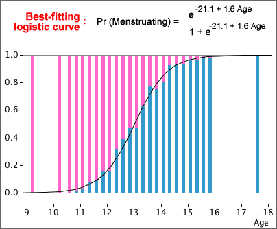

Estimating the logistic parameters
Estimating the parameters b0 and b1 of a logistic model is more difficult than estimating the parameters for a linear model by least squares, but many statistical programs will do the appropriate calculations for you.
We therefore take a 'black box' approach and simply show what parameter estimation gives without further justification.
